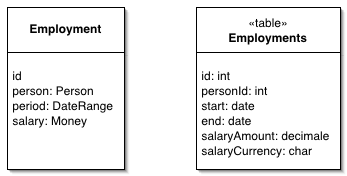

Embedded Value (Объединённое свойство)

Паттерн проектирования Embedded Value
Описание Embedded Value
Записывает объект в несколько полей таблицы другого объекта.
Множество небольших объектов играют важную роль в объектно-ориентированной системе, но не подходят для хранения в отдельной таблице. Это, к примеру, объекты-деньги, зависящие от валюты и диапазоны дат. Не смотря на то, что обычно для хранения отдельного объекта используется отдельная таблица, ни один человек в трезвом уме не станет делать отдельную таблицу для денег.
Паттерн Embedded Value (Объединённое свойство) распределяет значения полей объекта в поля таблицы объекта-владельца.
На схеме представлен объект "Место работы" (Employment) со ссылками на объекты диапазона дат и денег. В таблице, хранящей объект "место работы", объекты дат и денег раскладываются на отдельные поля, но не хранятся в отдельных таблицах.
Использована иллюстрация с сайта Мартина Фаулера.